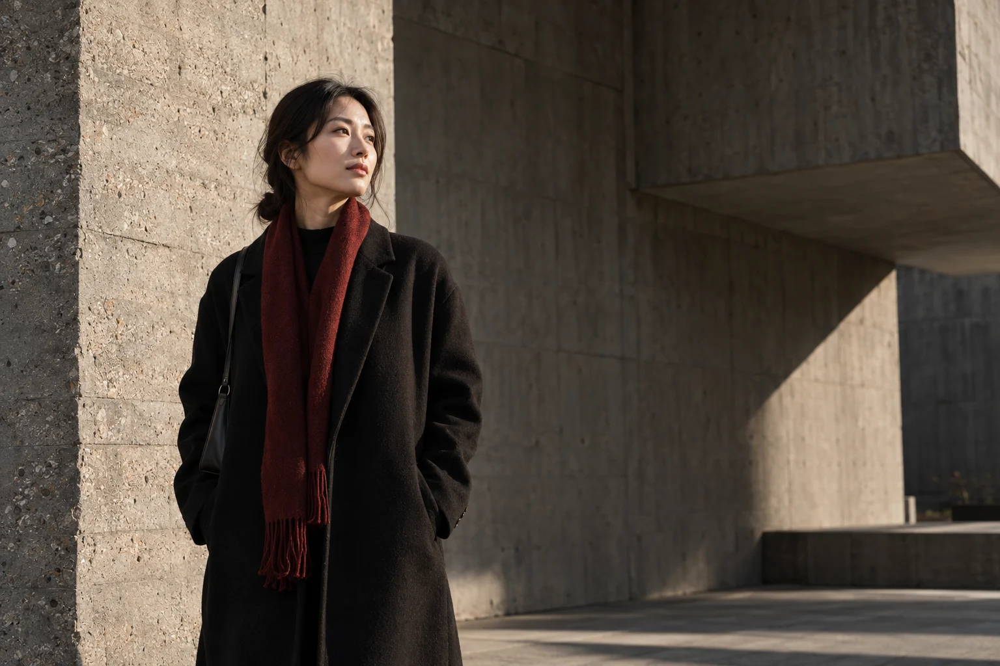
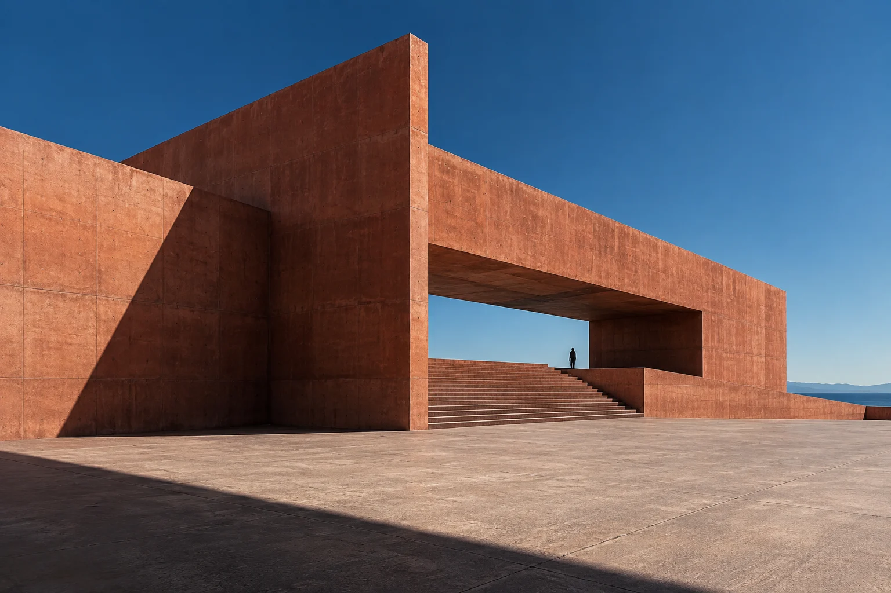
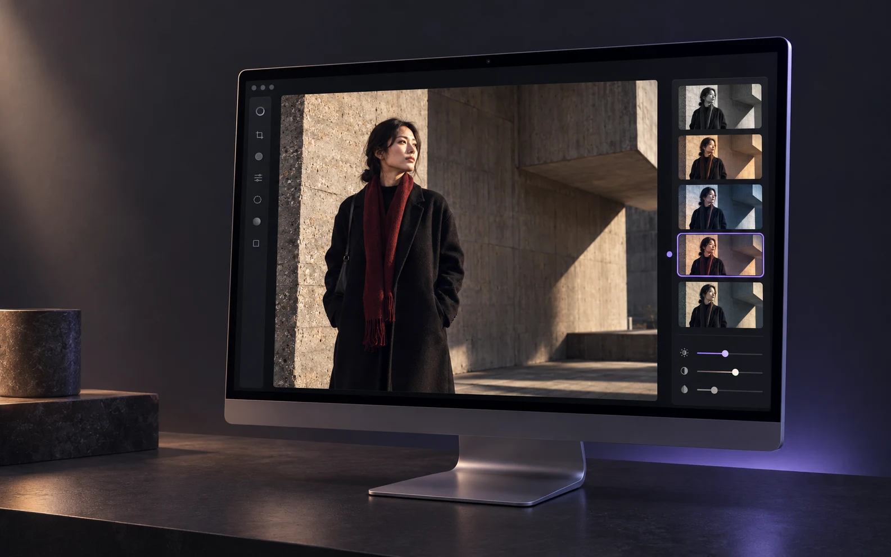
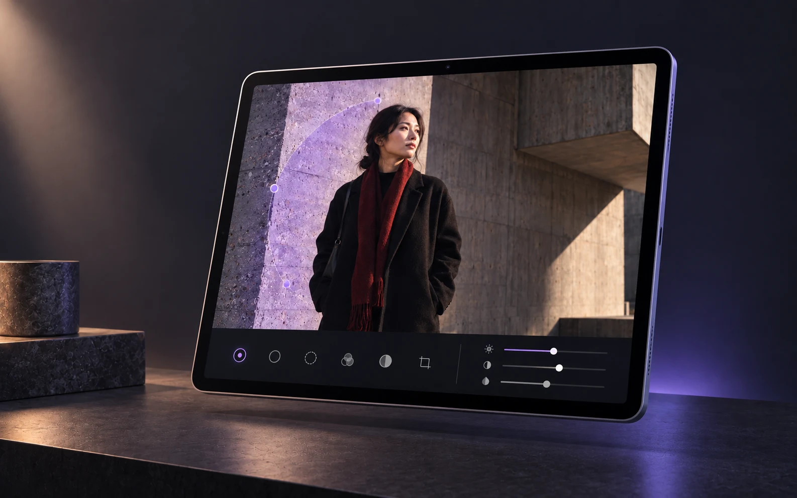
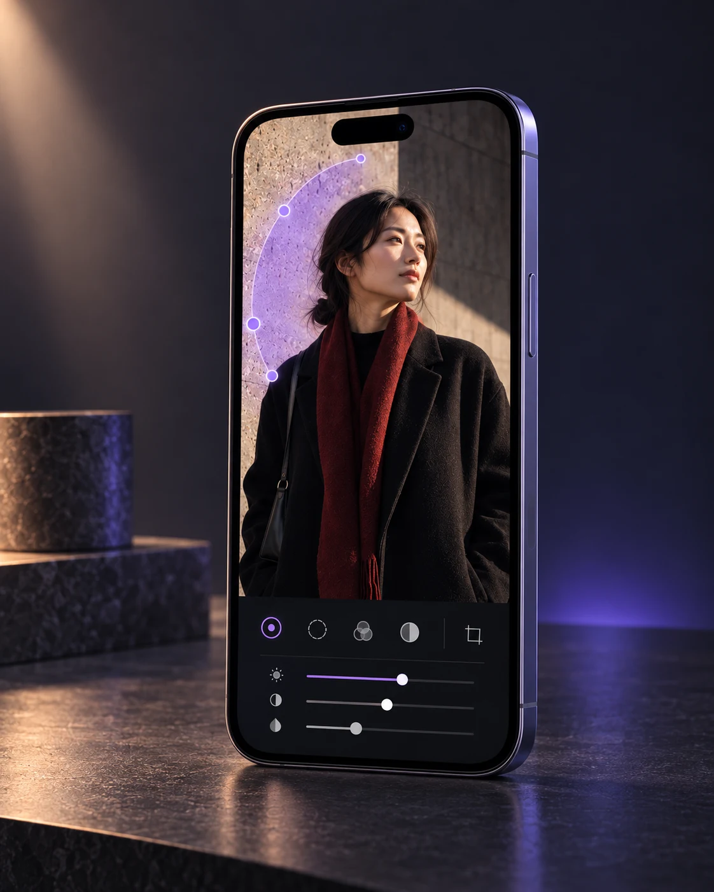

Mac
Start from the overall direction.
Compare light, color, and texture in a wide workspace before deciding where the photo should go.
Let the image speak first
Portraits, architecture, travel, and everyday moments each need a different balance of light, color, and attention. Awaking leaves that choice with you.


Style direction
Feel where the image wants to go first, then decide how light, color, and local detail should work together. Every direction begins with the same frame.
From direction to detail
The overall mood gives the image direction. Local control places the change exactly where eyes, light, material, and space need it.
Use color and light to establish the first impression.
Control the details that need attention without disturbing the rest.
Keep each choice clear, and let the work move forward.
One device-led creative path
Build the overall direction on Mac, place change locally on iPad, and keep refining on iPhone. Filters, masks, and color stay focused on the same image.

Start with filters, light, and color.

Use masks to focus attention where it belongs.

Return to color and detail whenever the work needs more.
Mac
Compare light, color, and texture in a wide workspace before deciding where the photo should go.
iPad
Use masks to keep the overall direction and the local decision working together.
iPhone
Return to color, local detail, and the next decision whenever the work calls for it.
From start to finish
Choose a photo from your device and begin locally.
Use filters, color, composition, lighting, and effects to find direction.
Use masks and brushes to place attention where it belongs.
Review layers, keep refining, then save the finished image locally.
On device
Awaking requires no account, does not automatically upload photos, masks, edits, or exports, and includes no ads, tracking, or third-party analytics.
Free & Pro
Import, make essential edits, undo and redo, and save a watermark-free standard JPEG without an account.
Unlock selected advanced filters, mask templates, effects, and high-quality export. Apple shows current products and prices.
Awaking
Available on the App Store
Download Awaking, opens the App Store in a new window